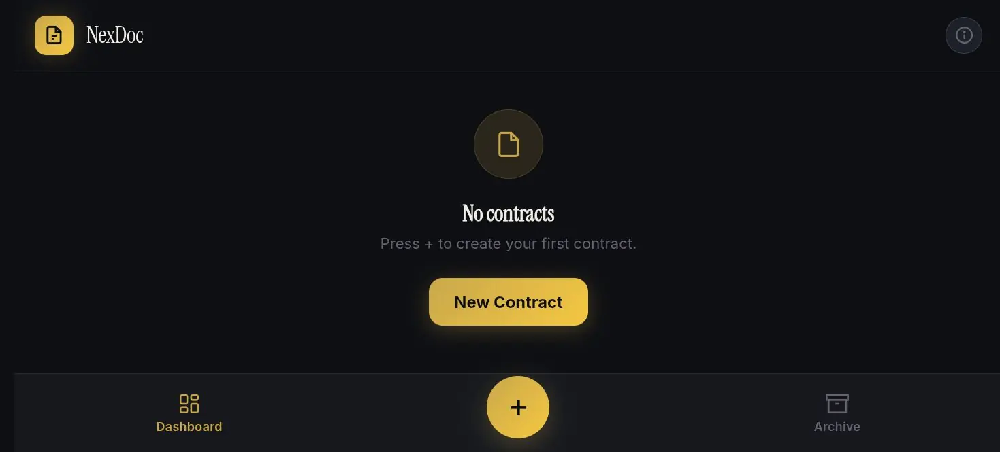
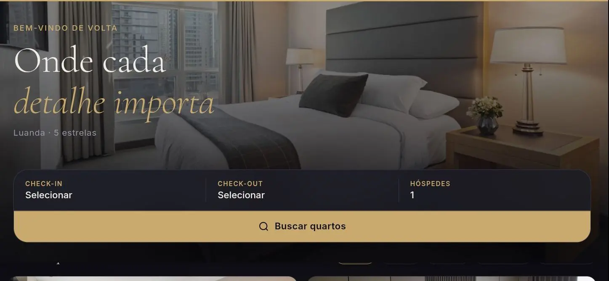
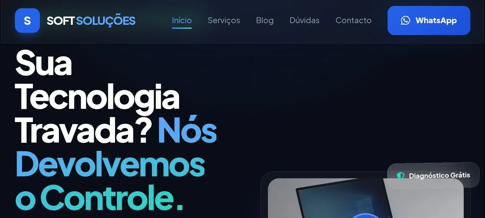
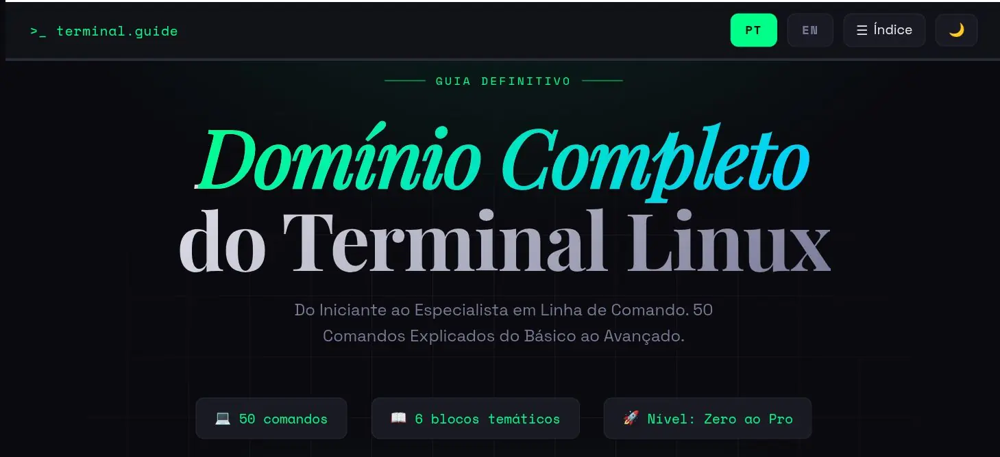

001
Tunerise
Plataforma social para músicos em desenvolvimento. Feed, perfis, descoberta de artistas e sistema de publicações.
Em breve
002
NexDoc
Plataforma de gestão documental e legal, redação de contratos, assinatura digital, arquivo seguro e painel de acompanhamento processual para escritórios.
Em fase final de testes.
Ver projeto →
003
LuxeStay
PWA de experiência hoteleira, portal do hóspede com reservas em tempo real, galeria interactiva, serviços in-room, gestão de estadias e sistema de avaliações. Suporte offline e instalável no homescreen.
Instalável como app.
Ver projeto →
004
Soft Soluções
Site institucional para empresa de assistência técnica em Luanda — desbloqueio FRP/IMEI, reparação mobile, câmeras CCTV, redes Wi-Fi, PC e criação de sites. Design com SEO local, Schema.org, Open Graph e formulário de contacto via WhatsApp.
Site em produção, a receber clientes reais em Luanda.
Ver projeto →
005
Guia do Terminal
Ebook gratuito e interactivo sobre o terminal Linux — 50 comandos explicados do básico ao avançado, organizados em 6 blocos temáticos, do iniciante ao especialista em linha de comando. Interface com índice lateral, modo claro/escuro e alternância PT/EN.
Recurso 100% gratuito, pensado para quem está a aprender a linha de comando do zero.
Ver projeto →···
Próximo projecto
Tens uma ideia? Posso ser o developer que a vai transformar em realidade.